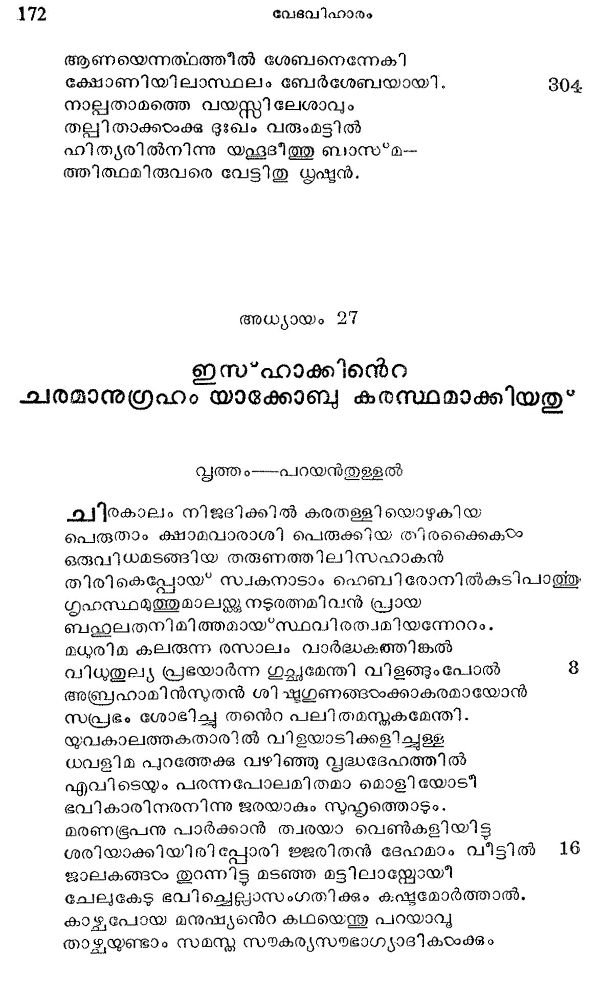

ക്ഷാമവും ഇസ*ഹാക്കിന്െറ ഗെറാര് യാത്രയും
വൃത്തം--കല്യാണി
അബ്രാമ്ൃയ കാലത്തു സംഭവിച്ചുള്ള
ദുര്ഭിക്ഷമെത്രയയം നിസ്ത്രാരമെന്നു
കല്ിക്കുവാന് തക്ക മട്ടിൽ കനാനി-
ലല്ലേതര ക്ഷാമമുണ്ടായി പശ്ചാല്.
ഇസ്സലാക്കിതിങ്കല് സ്വദേശം വെടിഞ്ഞു
ശസ്തമാത്ഥമെത്തീ ഗറാറെന്ന പൂരില്
തോയക്ഷയത്തില് ജലചരം മററു
.തോയാശയത്തിലണയുന്നപോലെ. 8
തത്രൈവ ദേവന് സമാവിര്ഭവിച്ചു
മിത്രാത്മജനോടുരച്ചിപ്രകാരം:
വിത്രാസമിപ്പരധിവസിച്ചാലും
മിസ്രയീംനാട്ടില് കടക്കൊലാചെററും
ഇദ്ദേശമെല്ലാം ഭവല് സന്തതിക്കും
മട്ടാസനാകും ഭവാന്നും തരുവന്
ത്വത്താതനോട ഞാന് ചൊന്നേ വാക്കെല്ലാം
പുത്തിയാംവണ്ണം സഫലീഭവിക്കും 16
എന്നാജ്ഞയെല്ലാ മനുഷ്മടിക്കമൂലം
ധന്യനായ* ത്തീര്ന്നുളെളൊ രബ്രഹാമി ന്െറ
സന്താനമേററം പെരുകി നഭസ്സില്
ചിന്താതിഗമായ കാന്തി പുരത്തേ
ചിത്തുന്ന നക്ഷത്ര സംഹതിക്കൊത്തു
സന്തതം ശോഭിച്ച വാഴ്ുമിബഭൂമയ
നിന്നുടെ സന്തതിമൂലമീലോകം
വന്നീടുമാശിഃ പരിപൂര്ണ്ണമായി. 24
എന്നു പറഞ്ഞു മറഞ്ഞു പരേശന്
വിന്നമോടദം പാര്ത്തവിടെ യിസ*ഹാകന്.
ഇസ*ഹാക്കിന്െറ ഗെറാര് നിവാസവും വീഗഴുയും
അത്രാന്തരേ ഭോഗലമ്പടരാകും
തതരത്യരേ ഭയന്നിസ്റ്റാക്ക തന്െറ
പതിയേ സോടദരിയെന്നുരചെയ്യാന്
പ്രത്നമാമി ശ്ലൈലി കണ്ടു നാം മുന്പും
അബ്രാം പതിച്ച കുഴിക്കു നടുവി-
ലിപ്രകാരം തന്നെ വീണിതു പുത്രന്
കൈതമേല്ള്ള കായ*കടംക്കു മുണ്ടല്ലോ
കൈ തുളയ്ക്കും കൊടുമുള്ളകളേോററം.
ഏവമിരിയ്കെ ഗറാറിലെ ബ*ഭ്ൂപ--
നേകദാ നോക്കും പൊഴുതിലിസ്റ്റാഹന്
റേബികയോട വിനോദിപ്പതായി
ജ്ജാലകമാര്ഗ്ലേണ കണ്ടിട്ടവനെ
ചാലേ വിളിച്ചുര ചെയ്ത: നീയെന്തു
മുലമീ വ്യാജം പറഞ്ഞതു ? വല്ല--
പുരുഷന്മാരും വധവിനേ സംഗി-
ച്ചേറിയ ദോഷം വരുത്തുകില്ലെന്നോ?
കഴശലമാണിതു പാപമല്ലെന്നു
പേശലാത്മന്! നീ പറയുന്നുവെങ്കില്
മാഷപ്രമാണമാ മിക്കളവെന്തു
ദോഷമുളവാക്ക് മെന്നോര്ത്തു കാൺക.
അല്ുമായള്ളതില്നിന്നു താനല്ലോ
കെല്ലെഴും തിന്മയുദിപ്പിതു പാത്താല്.
ക്ഷ്ദ്രസ*ഫുലിംഗമൊരു വനമാകെ
ക്കത്തിച്ചെരിപ്പാന് കഴിവുള്ള തത്രേ.
ആകയാല് സത്യനിരതനാകേണ്ട-
താവശ്യമാണു സത്യത്തിലും മര്ത്യന്
അല്ലായ*കിലൂഹാധികമായ ദോഷ്-
മല്ലോ ഭവിക്കുന്നതന്ത്യഘട്ടത്തില്
എന്നുരച്ഛിട്ട നപന് നാട്ടിലെല്ലാ--
മിന്നരനേയ മവന് ഭാര്യയേയും
ചെന്നൊരുവന് തൊട്ടപോകുന്ന പക്ഷ-
മന്നേരമേയവന് വധ്യനാകേണം
എന്നൊരുചട്ടം പ്രസിദ്ധീകരിച്ച
മന്നവ നിസ്റ്റാക്കി നത്യനുകൂലന്.
കര്ഷകനായ ഇസ*ഹാക്കു*
ഇങ്ങിനെ ഗേറാറധിവസിച്ചുളള
മംഗല നിസ്റ്കാക്ക ധാന്യക്കൃഷിക്കായ*
സോത്സാഹ മങ്ങൊരുമ്പെട്ടിതു രാജ--
വാത്സല്യ പാത്രം സമൃദ്ധ കേദാരന്.
ഭംഗിയും വീര്യവുമൊത്തുള്ള നല്ല
പുംഗവന്മാരേ നുകത്തില് പ്പെടുത്തി
തുംഗമായ്ള്ള കരിയോട ബന്ധി -
ച്ംഗുലിക്കും സ്ഥലം ബാക്കി വയ്ക്കാതെ
പൂട്ടി യഴുതു മറിച്ചിട്ടതിന്മേ--
ലാട്ടിന്കിട വച്ചു സാരവത്താക്കി
നല്ലൊരു വിത്തു വിതച്ചു ശിഷ്യന് ത-
നഅനള്ളി ലാചാര്യന് ത്രയീവിദ്യപോലെ.
മണ്ണില് മറഞ്ഞു കിടന്ന വിത്തെല്ലാം
തിണ്ണെന്നുണര്ന്നു മുളച്ചതിഭംഗ്യാ
ചിത്ത നിഗുഡമേ മഭ്യാസശക്തി
യുക്തഘട്ടത്തില് തെളിയുന്നപോലെ.
അബ്രാംസുതനിട്ട സവര്ണ്ണ വിത്താല്
സുപ്രസന്നാനന യാകിയ ഭൂമി
ധാന്യാങ്കരമാം പുളകം ധരിച്ചു
നിന്നിതു കേദാര മെങ്ങു മഭംഗം.
പിന്നീടിലകടം വിടര്ന്നു ഹരിത-
വില്ലീസ്്റിനൊത്തുള്ള കാന്മിപരത്തി.
കാററിലുലയുന്ന ധാന്യച്ചുരുടംകടം
പോററമ്മയാം ഭൂമി മാതാവുടമ്പില്
ചുററിപ്പുതച്ചൊരു പട്ടിന്െറ ഭംഗി
പററും ഞെറിക്ക് സമാനം വിളങ്ങി.
തണ്ടുരുണ്ടെത്രയയം നീണ്ടിട്ടതിന്െറ
മണ്ടയിലുണ്ടായ* കണിശം സുപുഷ്യം.
വേണ്ടപോല് മണ്ട പരിണതമായാ--
ലുണ്ടാംകണിശം നരര്ക്കും വിതര്ക്കം.
ധാന്യസ്നബക സംശോഷമകററാന്
മാന്യന് കൃഷകന് മുറയ* ഭകകി വെളളം.
പോഷിച്ചു കാണുന്ന വസ്തവിന്നുളള
ശോഷമകററുന്നതാര്ക്കു് മാമോദം.
നീരമാഹാര മരുടംവതുമൂലം
പാരം കൃതജ്ഞതയാര്ന്നു ധാന്യങ്ങഠം
ചച്ച്പടം നീക്കി ഹാടക വ്ര്സ്-
മച്ഛന്ന മോദം ധരിച്ചൊളിപൂണ്ടു
“സ്വക്ഛതോയ പ്രണാളിക്കു പൊന്ശീര്ഷ--
മുച്ചൈന്മരം കുനിച്ചാ നതിയേതി.
എപ്പൊഴിദ്ധാന്യങ്ങടം പക്വമായ*വന്നി--
തപ്പോളവിടെത്തി കീരോല്ക്കരങ്ങഠം
ഭിക്ഷ നല്കീടുന്ന ദിക്കില് ഭിക്ഷുക്ക--
ളക്ഷീണമെത്തും നിസറ്റ്റാനുസാരം.
കള്ാഷവര്ണ്ണം കലര്ന്ന പക്ഷങ്ങഠം
ചെമ്മേ ധരിക്കും ശുകങ്ങളിരിക്കും
ധാന്യസ്യബകങ്ങളി സ്റ്റാക്കിനുള്ള
മാന്യവിജയ പതാകകളായി
നിന്നുവിളങ്ങീ ശബള കേതുക്കഠം
മിന്നുന്ന പൊന്നിന് കൊടിമരമട്ടില്.
പൂര്ണ്ണപാകത്തിലറത്തുടമസ്ഥന്
ഭൂര്ണ്ണമുതിരത്തു മനോഹര ധാന്യം
കൂറിട്ട നോക്കിയ നേരത്തു വിത്തിന്
നൂറുമടങ്ങു ലഭിച്ചതായ്ക്കണ്ടു.
ഉയററം പെരുത്തോരിവന്നു ധനങ്ങ--
കററമില്ലാ തുളവാകിലും ഗവ്വം
ചെററു മുണ്ടായില്ല തിനാലമേയന്
മുററുമവനില് പ്രസന്നനായ്ന്നീര്ന്നു.
ഫലിസ്ത്ൃയയടെ അസുയ
ഉന്നതിപാര മവന്നുളവായി-
ടുന്നതുകണ്ടു വലഞ്ഞു ഫലി സ്ക്യര്.
ഒന്നൊഴിയാതീര്ഷ്യ തന്നുടെ കയ്യിൽ.
കന്ദുകംപോല് കളിയാടിത്തുടങ്ങി.
അന്യന്െറ ശ്രൈഷ്ടയമസഹ്ൃമായ*ത്തോന്നും
നിന്ഭ്യപ്രകൃതി കളിന്നുമുണ്ടേററം.
ഒവ്വൊരു മര്തൃന്നു മീശ്വരനേകം
ഭവ്ൃയതയാല് വിഷമിച്ചി ടേണ്ടാരും.
സ്വേച്ഛാനുസാര മമേയന് ചിലരേ-
യച*ച*റിതസ്ഥാനത്തിരുത്തുന്നു, തദ്വല്
ചിച്ച തെണ്ടാനയന്ക്കുന്തു ചിലരേ
പുച്ഛമുണ്ടാകേണ്ടിതി ലൊരുവര്ക്കും.
തന്നുടെ കണ്ണൊന്നു പൊട്ടിയെന്നാലും
അന്യന്െറ കണ്ണൂകയം രണ്ടും പൊടിപ്പാന്
ഇച്ഛിചീടുന്നോരനുയജത പാര്ത്താ-
ലചട്താകും മരുന്നില്ല ഭൂവില്!
ബോധംകെടുത്തു, മസുയ താന്മിഥ്യാ--
വാദംപരത്തും, ഗളക്ൃടന്തനാത്ഥം
ഹേതികരത്തില് ധരിക്ക, മെന്തൊന്നീ
ബാധയാമ്ീര്ഷ്്യ നടത്തുകയില്ല?
ജപ്പിശാചിക്കു വശംവദരായി
തല*പ്രവാസികളായ ഫലിസ്കയര്
ഇസ്താക്കിനുള്ള കിണറുകളെല്ലാം
കത്സയാ മണ്ണിട്ട തുത്തോരു ശേഷം
രാജസവിധത്തിലെത്തി യിസ*ഹാക്കിൻ
ഭൂഷണം ചൊല്ലിപ്പിണക്കി യയപനേ.
തല്*ക്കാരണാൽ ഭൂപനോതി: യിസ്റ്റാഹന്
പൊങ്കൊള്ളണം നാടു വിട്ടടന്തന്നെ
ഞങ്ങളെക്കാടം ശക്തനാവുകമുൂലം
ഞങ്ങയംക്കുപദ്രവമായ ഭവിക്കും നീ.
ഏതം വചനം ശ്രവിക്കെ ന്വിതാഖ്യന്
ഏതുമൊരക്ഷരം മിണ്ടാതെ തന്നെ
യാതനായ* ഗേരാര്യ സാനുവില് ശീപല്രരം
ശ്രീദമല്ലോക്ഷമ വാദത്തി നേക്കാരം. . 18
അങ്ങെത്തി യോരുടന് ശശര്രുക്കഠം തൂത്ത
തുംഗതരമാം കിണറുകളാകെ
ഭംഗിയായ വീണ്ടും കുഴിക്കയാല് നഷ്ടം
പൊങ്ങിവലുതാ യിസഹിക്കിനന്നു
തദാസരത്താഴ*വരയില് കുഴിച്ചു
പ്രത്യക്ഷമാക്കീ കിണറൊന്നു പിന്നെ
അപ്പോള ജപാലരാകും ഗെരാര്യ--
രപ്രഹിതങ്ങടേതെന്നു വാദിച്ചു 16
തന്നിമിത്തം വിവാദാത്ഥമാ മേശ--
ക്കെന്നു പേരിട്ട കിണററിന്നിസാഹന്.
മാറിക്കഴിച്ചു കിണറൊന്നു വേറേ
യേറിയ ശണ്ണയുണ്ടായി തതിന്നും
തല്ക്കാരണത്താ ലരുളിനാന് സിതാ-.
ഭിഖ്യയിതിന്നു രിപുതയെന്നത്ഥാം.
ഇസ്സഹാക്കേററം ജയിച്ചു കടന്നാ-
നിശ്ശഞ്ബയാകും പരീക്ഷയിലെല്ലാം. 16
ശത്രക്കളാം ഘോരസാഗരം താണ്ടാ-
നുത്തമ പോരം ക്ഷമയൊന്നു തന്നെ.
ശണ്ണയാകുന്ന ജവലനന്നു വൃദ്ധി
യണ്ടാകുമേധോഘടയാണു കോപം.
ക്ഷാന്തിയള്ളോന് മഹാ ക്രൂരന്നു പോലും
ശാന്തിയണ്ടാക്കാന് കഴിവിയലന്നു.
ലോകത്തെരുവില് കറഞ്ഞ വിലയ്ക്കു
ശോകമെന്യേ കിടച്ചീടുന്നു കോപം. 17
ഭൂവിലനല്വം സുദൂുര്ല്ലഭമാണി
കൈവലു)ൃദമാം ക്ഷമാപണ്യജാതം.
കാണ്സ്റ്റന്റയിനെന്ന രാജാവൊരിക്കൽ
വീണ് നൃൃതിക്കാരായ വന്ദികളോടും
അംഗസംരക്ഷകരോട മേകത്ര
തങ്ങിടും സന്ദര്ഭമേകന് വിപക്ഷന്
ചൊല്പിനാ നേതോ ശകാരവാക്കവ്വീ-
വല്പഭനോട മതി മറന്നുഗ്രം. 184
തീക്കട്ടകണ്ടു കരളവാനുള്ളി --
ലാക്കം പെരുത്ത പിപീലികപോലെ
ധിക്കാരിയാമീ മനുഷ്യന് ചൊരിഞ്ഞ
ഭമ്ത്യ വാക്കുകഠം നിന്നവക്കെല്ലാം
ക്ഷന്തവ്യമല്ലെന്നു തോന്നിപ്പറഞ്ഞാര്
സന്താപപൂവ്വം ന൬പോത്തമന് മുന്പില്.
രാജമകടമണിയാം ഭവാന്െറ
തേജസ്ത് തെല്ലം ഗണിക്കാതെയി പ്പോടം 2942
നീചനാ മിക്ഖലന് ചൊന്ന വാക്കിന്നു
നാശമേകേണ മിവന്നു നിന്മക്കം
ഭുഷ്ടനേപ്പെട്ടെന്നു വെട്ടാതെ ഭൂപന്
വിട്ടേക്കിലുണ്ടാ മനത്ഥാമനല്പം
പല്ലിളകുമ്പോടം പറിക്കണം മററു
പല്ലിന്നിളക്ക മുണ്ടാകാതിരിപ്പാന്
അല്ലായ*കിലിക്കാപഥത്തില് ചരിച്പാന്
തൊള്ളായിരത്തി ലധികമാഠം കാണും. 200
അല്പം ചുരുങ്ങിയ നാളകളായി
കെല്പുള്ള ക്രിസ്തുമതം സ്വീകരിച്ചു
ചില*പൂരുഷങ്കലമിതമാം ഭക്തി--
യഠംപ്പേറു മുല്ക്കൃഷ്യന ക്ൃക്രവത്തി
ഇപ്പടി! യോതിനാന് ചുററിനും നില്ക്കും
തല്രിവാരഗണത്തൊടത്യകച്ചം
മാദദശനായൊരു സ്രമാട്ടി നോത്താ--
ലേതാണധികം പ്രയാസം, വടിപ്പിന് 208
ധിക്കാരിയെക്കാലനക്കയപ്പാനോ ?
നിഷ്ക്രധം സവ്യം ക്ഷമിച്ചുടുവാനോ ?
രാജാവരാതിയെ ക്കൊല്ലന്നതൊട്ടും
പൂജാര്ഹകൃത്യമായോരുകി ല്ാരും.
എല്ലാ നൂപര്ക്കും ലവം പണിയെന്റയേ
കൊല്ലുവാന് സാധിക്കു മാത്മാരി സ്ൃന്ദം
എന്നാല് ക്ഷമിപ്പതെല്ലാര്ക്കും പ്രയാസം
ചൊന്നീടുകില്ലിതിനഃരും വിരോധം 216
അന്യര്ക്കധികം പ്രയാസമുള്ളോന്നാ-
ണിന്നു ഞാന് കൈക്കൊടംവതെന് ഭടന്മാരേ!
കുസ്സന്തയിന് വധിച്ചെന്നതി നേക്കാരം
കുസ്സന്തയിന് ക്ഷമിച്ചെന്നതു ലോകെ
ടദൈവമാഹാത്മ്യം പെരുക്കാനുതകം
മൈവമെന്നരുേ മുരമ്തൊലാ നാങ്ങംം.
എന്നുണ്ടൊരു ക്വഥ പുവ്വികമായി-
ച്ചൊന്നിരിക്കുന്നിതവന് ചരിതത്തില്. 228
ചിത്തം ചലിപ്പാന് നിമിത്തമിരിക്കെ
സുസ്ഥിരനായിട്ടിരിപ്പതാരാണോ
സത്യമായ*' തന്മര്ത്യനേ നാമശങ്കം
ശക്തിപുൂറ്വം ധീരനെന്നുചെയ'വൂ.
ഇത്ഥം വിചാരിച്ചിടുമ്പോളി സഹ--
൭നത്രതി തീക്ഷാവി ശോഭിയായ'* നിന്നാല്
അന്തരമുണ്ടാം ധനത്തിനാലല്പ
ക്ഷാന്തിയാലത്രേ ധനിത്വമിവന്നു 232
ഭ്വിട്ടിന് ജയഭേരിതന്തോൽല്പെളിക്കും
ചാട്ടകുന്തം താന് ക്ഷമ നരക്കെല്ലാം.
ശര്രുക്കളീര്ഷ്യയാലസന്ധുക്കളെല്ലാം
തൂത്തതു മാത്രമോ പുത്തന് പ്രഹികടം
നിന്ത്രപം വന്നു ഹാരരിച്ചതും ഭക്തന്
നിശ്രമം സവ്വം ക്ഷമിച്ചിതു ചിത്രം.
ഇത്ഥം തിതിക്ഷയാമായുധം മൂലം
സ്ലൃത്യം വിജയം വഹിക്കനിമിത്തം 240
ശത്രുക്കളെല്ലാം മടുത്തു ചമഞ്ഞു
മിത്രത്വമാശിച്ടുത്തു തുടങ്ങി.
ചപിന്നെക്കുഴിച്ച കിണറി നേപ്പററി-
യൊന്നുമുണ്ടായില്ല ശഞ്ണതന്മുലം
സര്ല്ലേശ്വരന് പീഡയെല്ലപാമൊതുക്കി--
യുവ്വിയില് വര്ദ്ധനവേകിയെന്നോതി
അല്പ്രഹിക്കിട്ട വിശാലതാത്ഥത്തെ
യുത്ഭവിപ്പിക്കും റഹബോത്തു നാമം 248
പോയിതവിടുന്നു വേറിടത്തേക്കു
മായാന്തകന് തന്െറ ദാസനിസ്റ്റാഹന്.
അത്രാന്തരേ യാഹ്വയാവി ര്ഭവിച്ചീ--
ഭക്തനേ വീണ്ടുമനഗ്രഹിച്ചപ്പോഴം
ത്രരബലിപീഠമെന്നു നി ര്മ്മിച്ചു
സത്രം കഴിച്ചു നമിച്ചീശപാദം.
രാജാവുമായുള്ള സന്ധി
ഇസ്ഥലത്തും കിണറൊന്നു കുഴിപ്പാന്
൭തം തുടരുന്ന വേളയില് ചിത്രം 256
ഗേറാര് നൃപനാ മബിമലക്കും തന്
സാരജ്ഞമിത്ര മഹൂസത്തുമപ്പോടം
വാഹിനീനാഥനാം ഫീക്കോലുമബ്രാം
സുനുവിന് വാസത്തു വന്നെത്തിടുന്നു.
എന്തിന്നിവിടെഴുന്നെള്ളിനാന് ഭൂപന്
ചിന്തിക്കിലിക്കുടം രാജഗ്ൃഹമോ?
അല്ലായ*കിലീക്ഷമാനാഥനെക്കാണ്മാന്
വന്നതാകും ക്ഷമാനാഥനത്രൈവ
ചൊന്നുടനിസ്റ്റാക്കവരോടു നിങ്ങ--
ഉെന്നെപ്പകച്ചു ഭവദ്ദിക്കില്നിന്നു
തള്ളിപ്പുറത്തു കളഞ്ഞിരിക്കുമ്പോഠം
ചിന്നെയുമെനതിന്നിവിടെ വരുന്നു ?
ഉത്തരംചൊല്ലിയവര്: ഞങ്ങളെല്ലാം
ശരൂരുക്കളായ* ബഹുപീഡ ചെയ്തിട്ടും
ഇത്തിരിപോലുമപജയമെന്യേ
വര്ദ്ധനവങ്ങേക്കളവാകമൂലം
സാക്ഷാല് ജഗത്ത*റയനാഥന് ഭവാന്െറ
പ്ക്ഷമാണെന്നറിയുന്നുണ്ടു ഞങ്ങാം.
ആകയാലന്യോന്യ മൈത്രിയില് നമ്മ-
ളേകീഭവിച്ചിരിപ്പാന് സഖ്യമൊന്നു
വേഗേന ചെയ്യണമെന്നു കരുതി--
ആാഗതരായാര് വയമിവിടത്തില്.
നിന്നെ നി പീഡനം ചെയ്യാതെ നന്മ
തന്നേ നിനക്കു ചെയ്തിങ്ങോട്ട ഞങ്ങഠം
മംഗളയാനമരുളിയ വണ്ണം
ഞങ്ങളേയും നീയുപ്രവിക്കായ*വാന്
ആശ്രവമൊന്നു കഴിക്ക, ഭവാന് സ-
വ്യേശ്വരാനുഗ്രഹ പാത്രമാണല്ലോ.
ഇത്ഥമവര്ചൊന്നമാത്രയില് പുവ്വ--
ബിദേഷമൊന്നും കരുതാതെ ധീമാ--
നിസ്്കാക്കവരെ ബഹുമാനപൂര്വ്വം
വേശഗ്ദത്തിലംഗീകരിച്ചു പുജിച്ചാന്
ദ്വേഷ്യാക്കഠം നമമുടെ വീട്ടിലെത്തുന്ന
ഘട്ടത്തിലന്യല്ഗുണം തെളിയുന്നു
രോഗത്തിലത്രേ മരുന്നിന്െറ നന്മ
പാകത്തില് വ്യക്തമാകുന്നതു പാര്ത്താല്.
ഭൂപനും ഭൂത്യരും രാത്രിയെത്തത്ര--
യാപനം ചെയ്തഷസ്തിങജകലെണീററു
സഖ്യമിസ്റ്റാക്കമായ സാധിച്ചശേഷം
സല്കൃതരായി മടങ്ങ് പുരത്തില്.
അന്നാളിലിസ്റ്റാക്കിനുള്ള ദാസേയ-
ഭസുവില് തോയമുറവതു കണ്ടു
വന്നറിയിച്ചാരിസാക്കനേ ശീലഘ-
മുന്നതമേറദമവന്നു മുണ്ടായി.
രാജാവുമായി നടത്തിയ സഖ്യ-
ഭമാരേണ്ടതിന്നാക്കിണററിന്നു നാമം
ആണയെന്നത്ഥത്തീല് ശേബനെന്നേകി
ക്ഷോണിയിലാസ്ഥലം ബേര്ശേബയായി.
നാല്പതാമത്തെ വയസ്സിലേശാവും
തല്ലിതാക്കഠംക്കു ദുഃഖം വരുംമട്ടില്
ഹിത്യരില്നിന്നു യഛൂദീത്തു ബാസ്മ-
ത്തിത്ഥമിരുവരെ വേട്ടിതു ധൃഷ്യന്.
